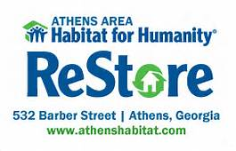

Habitat for Humanity is a nonprofit organization that provides safe and affordable housing to those who can't afford it. Habitat makes a difference in the lives of many and the organization's efforts can be seen in communities around the globe. The houses built by Habitat are simple and affordable. Hope is given to low income families by the housing they are able to move into. They are able to be proud of where they live and can try to make their lives better because of what they have been given.
Habitat for Humanity has a purpose of ending poverty around the world by providing places to live to those who are in need for shelter. The organization strives to eliminate homelessness. In addition to helping those who are living in poverty, Habitat also has a program that assists those who become homeless due to natural disasters, such as hurricanes or tornados The organization provides shelter and housing in order to help those families recover and get their lives rebuilt.
At UGA, Habitat for Humanity is a student organization that works with the Athens area H4H program by helping with house builds, and raising money through donations. Students have many opportunities to help with builds on the weekends, and can also help by volunteering through other organizations, such as the Northwest Food Bank in Athens. Members also participate in several fundraisers, such as the scratch off fundraiser, and the gift wrap fundraiser, which is held at many Barnes and Noble locations across Georgia.
| % that feel more financially secure | 80 |
| % better able to save money | 74 |
| % better able to pay bills on time | 71 |